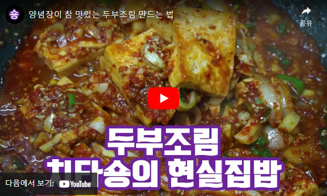
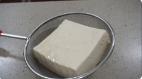
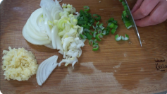
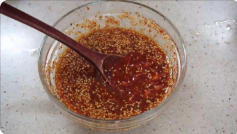
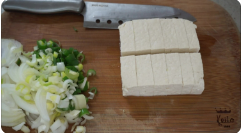
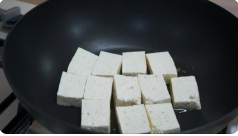
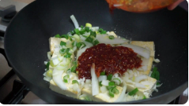
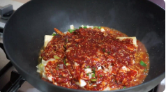
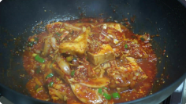

치타숑
양념장이 참 맛있는 두부조림
포슬포슬한 두부조림에 밥을 비벼보아요~
명절음식이 질릴때~ 요 얼큰한 두부조림 어떠세요~
양념장과 함께 두부조림에 밥을 비벼~ 김이나 김치를 싸먹어보세요^^
두부 한모로 휼륭한 한끼가 완성된답니다~
두부조림 간단하게 만들 수 있는 레시피 영상으로 확인해보세요~
2인분
30분이내
아무나
URL복사
카카오톡이미지
페이스북이미지
트위터이미지
재료Ingredients
- 두부 1모 구매
- 양파 1/2개 구매
- 파 1/2대 구매
- 들기름 1큰술 구매
[재료]
- 물 100ml 구매
- 간장 4큰술 구매
- 고춧가루 2큰술 구매
- 굴소스 1/2큰술 구매
- 다진마늘 1큰술 구매
- 설탕 1큰술 구매
- 깨 1큰술 구매
- 참기름 1큰술 구매
조리도구
- 채반 구매
- 요리나이프 구매
- 요리스푼 구매
- 원형접시 구매
- 나무도마 구매
- 믹싱유리볼 구매
- 궁중팬 구매
- 사각접시 구매
동영상
조리순서Steps
- 두부는 체에 받쳐 물기를 빼주세요 푸딩같은 탱글함! 산미르 비단두부 4팩 / 전두부 4종 모음 
- 양파는 얇게 썰어주시고 파는 송송 썰어둡니다 양파 1/2, 파 1/2 
- 양념장도 만들어주세요 물 100ml, 간장 4 큰 술, 고춧가루 2 큰 술, 굴소스1/2 큰 술, 다진 마늘 1 큰 술, 설탕 1 큰 술, 깨 1 큰 술, 참기름 1 큰 술 
- 두부도 먹기 좋게 썰어주세요 두부 한모 
- 식용류 1/2 큰 술, 들기름 1 큰 술를 두룬 팬에 두부를 구워주세요 양면을 다 구워주시면 됩니다 1분정도씩 부들부들하게 구워요 식용류 1/2 큰 술, 들기름 1 큰 술 
- 두부가 구워졌다면 야채와 양념장을 올리고 5분더 끓여주세요 중약불 
- 이제 뚜껑을 덮고 1분 더 끓여줍니다 중약불 
- 너무 간단하게 완성이죠~^^ 